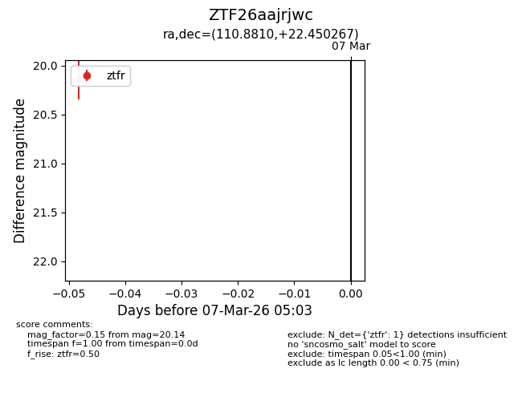
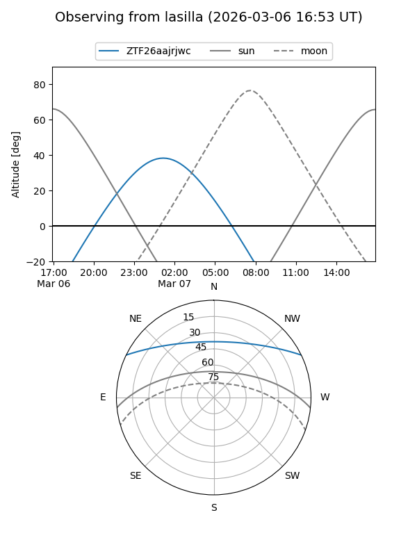
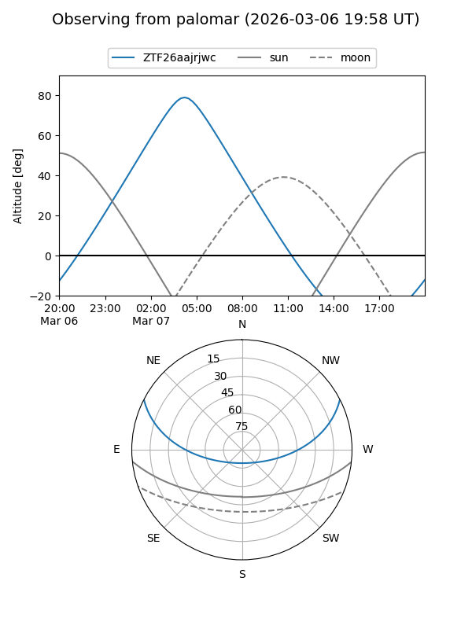
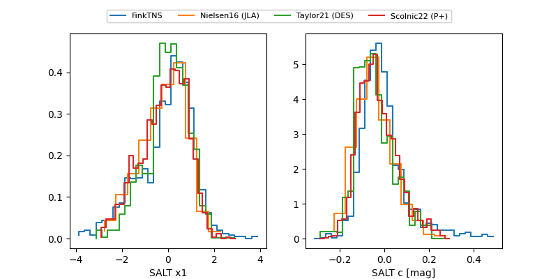

ZTF26aajrjwc
Target ZTF26aajrjwc at 2026-03-07 05:06
Aliases and brokers:
FINK: link
Lasair: link
ALeRCE: link
alt names
ZTF26aajrjwc (ztf,fink_ztf)
Coordinates:
equatorial (ra, dec) = 110.8810,+22.45027
equatorial (HMS+DMS) = 07:23:31.44,+22:27:00.96
galactic (l, b) = (195.8594,+16.79286)
Flags:
Photometry:
last ztfr=20.14
1 ztfr detections
Lightcurve

Visibility


Additional plots
